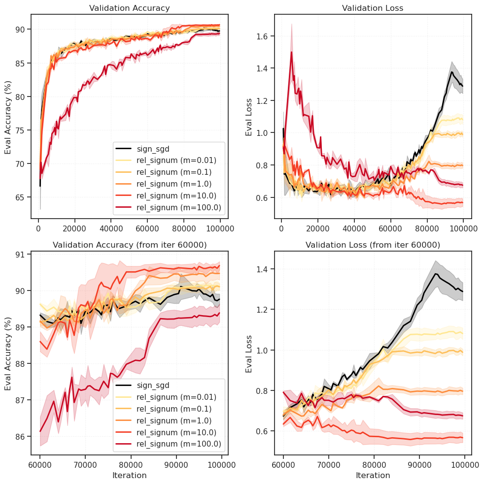
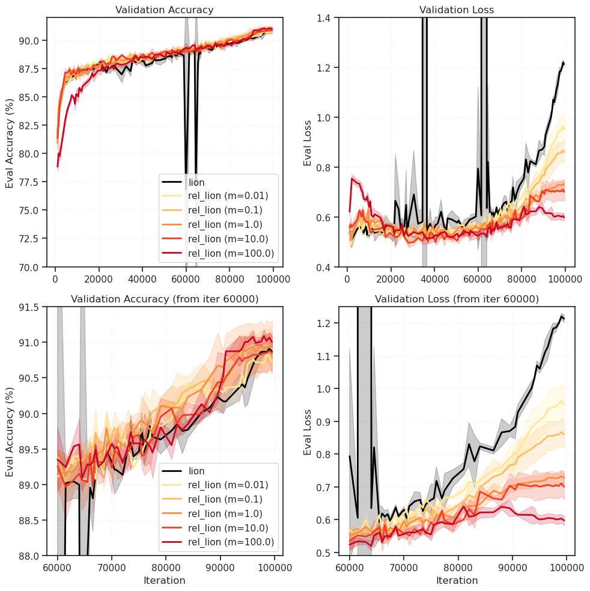
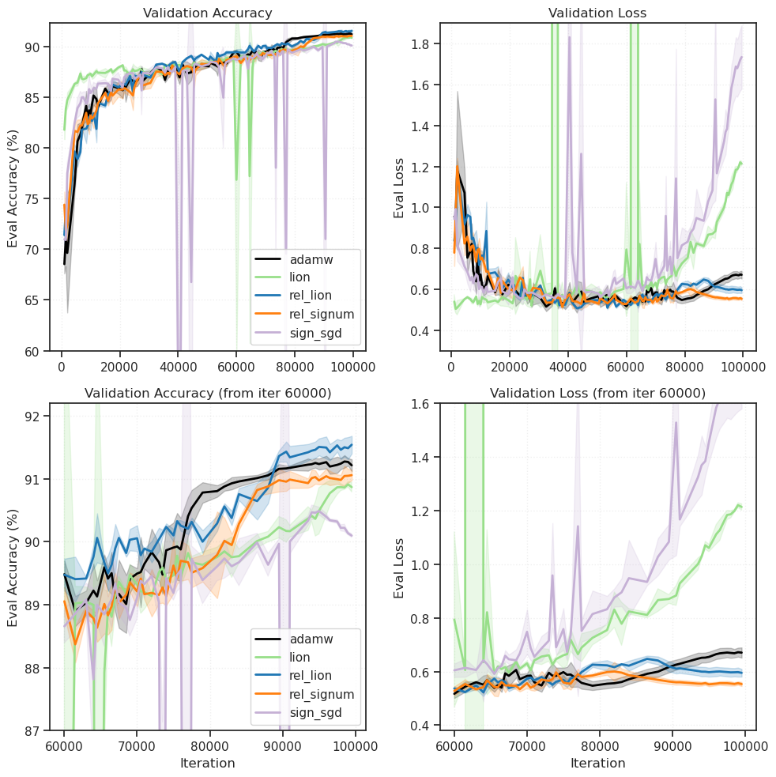

(14) GRA — figs vision (CIFAR10)#
project = GRA, host = any, device = any
def plot_optimizer_comparison(
grouped_data: dict,
save_path: str = None,
figsize: tuple = (10, 10),
zoom_start_iter: int = 60000,
color_map: dict = None,
ylims: list = None, ):
"""
Plot eval/acc and eval/loss for grouped runs.
Args:
grouped_data: Dict with optimizer names as keys
values are lists of {'seed': int, 'history': DataFrame, 'config': dict}
save_path: Optional path to save figure
figsize: Figure size
zoom_start_iter: Starting iteration for zoomed-in plots (second row)
color_map: Optional dict mapping optimizer names to colors
"""
fig, axes = plt.subplots(2, 2, figsize=figsize)
# Default color cycle if no color_map provided
default_colors = plt.cm.tab10.colors
# Plot each group
for idx, (key, runs) in enumerate(grouped_data.items()):
# Choose color: custom map > default cycle
if color_map and key in color_map:
color = color_map[key]
else:
color = default_colors[idx % len(default_colors)]
# Collect curves across seeds
acc_curves = []
loss_curves = []
for run in runs:
h = run['history']
# Get eval data (drop NaN rows)
eval_data = h[['iter', 'eval/acc', 'eval/loss']].dropna()
if len(eval_data) == 0:
continue
iters = eval_data['iter'].values
acc_curves.append((iters, eval_data['eval/acc'].values))
loss_curves.append((iters, eval_data['eval/loss'].values))
if len(acc_curves) == 0:
continue
# Align curves to common iteration points
common_iters = acc_curves[0][0] # assume all have same eval points
acc_matrix = np.array([c[1] for c in acc_curves])
loss_matrix = np.array([c[1] for c in loss_curves])
acc_mean = acc_matrix.mean(axis=0)
acc_std = acc_matrix.std(axis=0)
loss_mean = loss_matrix.mean(axis=0)
loss_std = loss_matrix.std(axis=0)
# Row 0: Full range
axes[0, 0].plot(common_iters, acc_mean, color=color, label=key, linewidth=2)
axes[0, 0].fill_between(common_iters, acc_mean - acc_std, acc_mean + acc_std,
color=color, alpha=0.2)
axes[0, 1].plot(common_iters, loss_mean, color=color, label=key, linewidth=2)
axes[0, 1].fill_between(common_iters, loss_mean - loss_std, loss_mean + loss_std,
color=color, alpha=0.2)
# Row 1: Zoomed in (from zoom_start_iter onwards)
zoom_mask = common_iters >= zoom_start_iter
if zoom_mask.any():
zoom_iters = common_iters[zoom_mask]
zoom_acc_mean = acc_mean[zoom_mask]
zoom_acc_std = acc_std[zoom_mask]
zoom_loss_mean = loss_mean[zoom_mask]
zoom_loss_std = loss_std[zoom_mask]
axes[1, 0].plot(zoom_iters, zoom_acc_mean, color=color, label=key, linewidth=2)
axes[1, 0].fill_between(zoom_iters, zoom_acc_mean - zoom_acc_std, zoom_acc_mean + zoom_acc_std,
color=color, alpha=0.2)
axes[1, 1].plot(zoom_iters, zoom_loss_mean, color=color, label=key, linewidth=2)
axes[1, 1].fill_between(zoom_iters, zoom_loss_mean - zoom_loss_std, zoom_loss_mean + zoom_loss_std,
color=color, alpha=0.2)
# Formatting - Row 0 (full range)
axes[0, 0].set_xlabel('')
axes[0, 0].set_ylabel('Eval Accuracy (%)')
axes[0, 0].set_title('Validation Accuracy')
axes[0, 0].legend(loc='lower right')
axes[0, 0].grid(True, alpha=0.3)
axes[0, 1].set_xlabel('')
axes[0, 1].set_ylabel('Eval Loss')
axes[0, 1].set_title('Validation Loss')
axes[0, 1].grid(True, alpha=0.3)
# Formatting - Row 1 (zoomed)
axes[1, 0].set_xlabel('Iteration')
axes[1, 0].set_ylabel('Eval Accuracy (%)')
axes[1, 0].set_title(f'Validation Accuracy (from iter {zoom_start_iter})')
axes[1, 0].legend(loc='lower right')
axes[1, 0].grid(True, alpha=0.3)
axes[1, 1].set_xlabel('Iteration')
axes[1, 1].set_ylabel('Eval Loss')
axes[1, 1].set_title(f'Validation Loss (from iter {zoom_start_iter})')
axes[1, 1].grid(True, alpha=0.3)
if ylims is not None:
for idx, ylim in enumerate(ylims):
i, j = idx // 2, idx % 2
axes[i, j].set_ylim(ylim)
plt.tight_layout()
if save_path:
plt.savefig(save_path, dpi=150, bbox_inches='tight')
print(f"Saved to {save_path}")
plt.show()
return fig, axes
from gra.experiments.wandb_analysis import *
df = fetch_runs(entity='pal-lab', project='GRA-CIFAR10')
summary = get_optimizer_summary(df) # aggregates across seeds
best_per_opt = compare_optimizers(df, metric='best_val_acc')
wandb: ERROR Failed to detect the name of this notebook. You can set it manually with the WANDB_NOTEBOOK_NAME environment variable to enable code saving.
wandb: Currently logged in as: hadivafaii (poisson-collab) to https://api.wandb.ai. Use `wandb login --relogin` to force relogin
Fetching runs from: pal-lab/GRA-CIFAR10
Found 700 runs
Processed 698 runs (after filtering)
best_per_opt
| run_id | run_name | state | created_at | optimizer | weight_decay | grad_clip | learning_rate | beta1 | beta2 | ... | seed | eval/loss | eval/acc | eval/best_acc | train/loss | train/grad_norm | best_val_acc | best_iter | final_val_acc | final_val_loss | |
|---|---|---|---|---|---|---|---|---|---|---|---|---|---|---|---|---|---|---|---|---|---|
| 658 | 3fakxnpj | rel_lion(lr=1e-2,wd=0.1,m=500.0,b1=0.7,b2=0.99... | finished | 2026-01-14T20:57:12Z | rel_lion | 0.1 | 1 | 0.010 | 0.70 | 0.990 | ... | 1 | 0.561133 | 91.839999 | 91.999996 | 2.154615e-06 | 5.864816e-04 | 91.999996 | 99500 | 91.839999 | 0.561133 |
| 206 | 1kvu9cgg | adamw(lr=3e-3,wd=0.1,b1=0.95,b2=0.999)_resnet/... | finished | 2026-01-11T01:51:25Z | adamw | 0.1 | 1 | 0.003 | 0.95 | 0.999 | ... | 1 | 0.665918 | 91.369998 | 91.450000 | 5.122274e-09 | 2.364198e-07 | 91.450000 | 98500 | 91.369998 | 0.665918 |
| 335 | 0ok4kcd1 | rel_signum(lr=1e-2,wd=0.1,m=100.0,mom=0.95)_re... | finished | 2026-01-11T22:18:17Z | rel_signum | 0.1 | 1 | 0.010 | 0.95 | 0.950 | ... | 1 | 0.578320 | 91.299999 | 91.299999 | 2.927613e-06 | 4.826132e-04 | 91.299999 | 100000 | 91.299999 | 0.578320 |
| 555 | mry6njuc | lion(lr=3e-3,wd=0.1,b1=0.95,b2=0.99)_resnet/20... | finished | 2026-01-13T22:25:18Z | lion | 0.1 | 1 | 0.003 | 0.95 | 0.990 | ... | 1 | 1.200781 | 90.989995 | 91.039997 | 0.000000e+00 | 1.840791e-10 | 91.039997 | 96500 | 90.989995 | 1.200781 |
| 580 | 21ury57z | sign_sgd(lr=3e-3,wd=0.1,mom=0.99)_resnet/2026_... | finished | 2026-01-14T04:28:00Z | sign_sgd | 0.1 | 1 | 0.003 | 0.99 | 0.950 | ... | 0 | 1.342773 | 90.609998 | 90.700001 | 0.000000e+00 | 9.190389e-12 | 90.700001 | 97000 | 90.609998 | 1.342773 |
5 rows × 21 columns
latex = generate_detailed_table(
df=df.loc[df['learning_rate'] == 3e-3],
caption='',
)
print(latex)
\begin{table} \centering \caption{} \label{tab:optimizer_comparison} \resizebox{\textwidth}{!}{% \begin{tabular}{lccccc} \toprule Optimizer & LR & $(\beta_1, \beta_2)$ & Mass & Best Acc. (\%) & Final Acc. (\%) \\ \midrule rel\_lion & 3e-3 & (0.50, 0.990) & 100.00 & $91.55 \pm 0.18$ & $91.49 \pm 0.23$ \\ adamw & 3e-3 & (0.80, 0.999) & 0.10 & $91.32 \pm 0.10$ & $91.27 \pm 0.10$ \\ rel\_signum & 3e-3 & (0.90, 0.950) & 10.00 & $91.11 \pm 0.14$ & $91.01 \pm 0.15$ \\ lion & 3e-3 & (0.95, 0.990) & 0.10 & $90.97 \pm 0.06$ & $90.81 \pm 0.19$ \\ sign\_sgd & 3e-3 & (0.90, 0.950) & 0.10 & $90.55 \pm 0.03$ & $90.01 \pm 0.05$ \\ \bottomrule \end{tabular} } \end{table}
Signum plot#
filtered_df = filter_runs(
df,
optimizers=['rel_signum', 'sign_sgd'], # Both optimizers
lr=1e-3,
beta1=0.95,
)
print_filtered_runs(
filtered_df,
title="rel_signum vs sign_sgd (beta1=0.95, lr=1e-3)"
)
================================================================================
rel_signum vs sign_sgd (beta1=0.95, lr=1e-3)
================================================================================
Total: 18 runs
optimizer learning_rate beta1 beta2 mass seed best_val_acc final_val_acc run_id
rel_signum 1e-03 0.950 0.950 0.010 0 90.08 89.94 lquarjfa
rel_signum 1e-03 0.950 0.950 0.010 1 90.29 90.29 fbzi2q0q
rel_signum 1e-03 0.950 0.950 0.010 2 90.29 90.17 3xrtyyct
rel_signum 1e-03 0.950 0.950 0.100 0 90.28 90.24 oxuosoya
rel_signum 1e-03 0.950 0.950 0.100 1 90.10 90.01 q35mvavf
rel_signum 1e-03 0.950 0.950 0.100 2 90.09 90.01 bbz8k7kc
rel_signum 1e-03 0.950 0.950 1.000 0 90.76 90.65 oo0twfwp
rel_signum 1e-03 0.950 0.950 1.000 1 90.47 90.47 9ywjlgm4
rel_signum 1e-03 0.950 0.950 1.000 2 90.32 90.24 114pdj0f
rel_signum 1e-03 0.950 0.950 10.000 0 90.58 90.53 bujvf1yf
rel_signum 1e-03 0.950 0.950 10.000 1 90.83 90.80 u64upcdk
rel_signum 1e-03 0.950 0.950 10.000 2 90.74 90.63 dwn7on46
rel_signum 1e-03 0.950 0.950 100.000 0 89.73 89.58 8yxjy3uj
rel_signum 1e-03 0.950 0.950 100.000 1 89.30 89.17 8xwb37ve
rel_signum 1e-03 0.950 0.950 100.000 2 89.16 89.11 dizxftez
sign_sgd 1e-03 0.950 0.950 0.100 0 90.12 89.85 wax4yqun
sign_sgd 1e-03 0.950 0.950 0.100 1 89.99 89.48 30cyre2y
sign_sgd 1e-03 0.950 0.950 0.100 2 90.54 89.89 cl645flp
--- Summary by Optimizer ---
rel_signum: n=15, best_val_acc = 90.20 ± 0.49
sign_sgd: n=3, best_val_acc = 90.22 ± 0.29
history_keys = [
'iter',
'_step',
'train/loss',
'train/grad_norm',
'eval/acc',
'eval/loss',
'eval/best_acc',
]
run_histories = fetch_multiple_run_histories(
filtered_df,
entity='pal-lab',
project='GRA-CIFAR10',
keys=history_keys,
verbose=True,
)
Fetching lquarjfa: rel_signum, mass=0.01, seed=0
Fetching oxuosoya: rel_signum, mass=0.1, seed=0
Fetching oo0twfwp: rel_signum, mass=1.0, seed=0
Fetching bujvf1yf: rel_signum, mass=10.0, seed=0
Fetching 8yxjy3uj: rel_signum, mass=100.0, seed=0
Fetching fbzi2q0q: rel_signum, mass=0.01, seed=1
Fetching q35mvavf: rel_signum, mass=0.1, seed=1
Fetching 9ywjlgm4: rel_signum, mass=1.0, seed=1
Fetching u64upcdk: rel_signum, mass=10.0, seed=1
Fetching 8xwb37ve: rel_signum, mass=100.0, seed=1
Fetching 3xrtyyct: rel_signum, mass=0.01, seed=2
Fetching bbz8k7kc: rel_signum, mass=0.1, seed=2
Fetching 114pdj0f: rel_signum, mass=1.0, seed=2
Fetching dwn7on46: rel_signum, mass=10.0, seed=2
Fetching dizxftez: rel_signum, mass=100.0, seed=2
Fetching wax4yqun: sign_sgd, mass=0.1, seed=0
Fetching 30cyre2y: sign_sgd, mass=0.1, seed=1
Fetching cl645flp: sign_sgd, mass=0.1, seed=2
grouped_data = collections.defaultdict(list)
for run_id, data in run_histories.items():
config = data['config']
history = data['history']
opt = config.get('optimizer')
mass = config.get('mass')
# Create a key that distinguishes rel_signum masses
if opt == 'rel_signum' and mass is not None:
key = f"rel_signum (m={mass})"
else:
key = opt
grouped_data[key].append({
'seed': config.get('seed'),
'history': history,
'config': config,
})
grouped_data = dict(sorted(grouped_data.items()))
list(grouped_data)
['rel_signum (m=0.01)',
'rel_signum (m=0.1)',
'rel_signum (m=1.0)',
'rel_signum (m=10.0)',
'rel_signum (m=100.0)',
'sign_sgd']
for key, runs in sorted(grouped_data.items()):
seeds = [r['seed'] for r in runs]
print(f"{key}:\t{len(runs)} runs, seeds={seeds}")
rel_signum (m=0.01): 3 runs, seeds=[0, 1, 2]
rel_signum (m=0.1): 3 runs, seeds=[0, 1, 2]
rel_signum (m=1.0): 3 runs, seeds=[0, 1, 2]
rel_signum (m=10.0): 3 runs, seeds=[0, 1, 2]
rel_signum (m=100.0): 3 runs, seeds=[0, 1, 2]
sign_sgd: 3 runs, seeds=[0, 1, 2]
for key, runs in sorted(grouped_data.items()):
print(f"\n{key}:")
for run in runs:
h = run['history']
seed = run['seed']
# Get eval accuracy (non-null values only)
eval_acc = h[['iter', 'eval/acc']].dropna()
if len(eval_acc) > 0:
final_acc = eval_acc['eval/acc'].iloc[-1]
best_acc = eval_acc['eval/acc'].max()
n_evals = len(eval_acc)
print(f" seed={seed}: {n_evals} evals, best={best_acc:.2f}, final={final_acc:.2f}")
else:
print(f" seed={seed}: no eval data")
rel_signum (m=0.01):
seed=0: 100 evals, best=90.04, final=89.96
seed=1: 100 evals, best=90.28, final=90.21
seed=2: 100 evals, best=90.27, final=90.15
rel_signum (m=0.1):
seed=0: 100 evals, best=90.28, final=90.23
seed=1: 100 evals, best=90.08, final=90.03
seed=2: 100 evals, best=90.05, final=90.05
rel_signum (m=1.0):
seed=0: 100 evals, best=90.76, final=90.72
seed=1: 100 evals, best=90.43, final=90.37
seed=2: 100 evals, best=90.32, final=90.32
rel_signum (m=10.0):
seed=0: 100 evals, best=90.56, final=90.55
seed=1: 100 evals, best=90.83, final=90.83
seed=2: 100 evals, best=90.70, final=90.67
rel_signum (m=100.0):
seed=0: 100 evals, best=89.73, final=89.73
seed=1: 100 evals, best=89.27, final=89.27
seed=2: 100 evals, best=89.15, final=89.15
sign_sgd:
seed=0: 100 evals, best=90.12, final=89.84
seed=1: 100 evals, best=89.89, final=89.55
seed=2: 100 evals, best=90.54, final=89.89
reorder + plot#
key = "sign_sgd"
new_grouped = {}
new_grouped[key] = grouped_data[key]
for k, v in grouped_data.items():
if k != key:
new_grouped[k] = v
grouped_data = new_grouped
list(grouped_data)
['sign_sgd',
'rel_signum (m=0.01)',
'rel_signum (m=0.1)',
'rel_signum (m=1.0)',
'rel_signum (m=10.0)',
'rel_signum (m=100.0)']
cmap = 'YlOrRd'# 'YlOrBr'
rel_keys = sorted([k for k in grouped_data.keys() if 'rel_' in k])
colors = sns.color_palette(
n_colors=len(rel_keys), palette=cmap)
color_map = {
k: colors[i] for i, k
in enumerate(rel_keys)
}
color_map[key] = 'k'
_ = plot_optimizer_comparison(
grouped_data=grouped_data,
save_path=fig_base_dir / 'signum_mass.png',
color_map=color_map,
)
Saved to /home/hadi/Dropbox/git/jb-progress-2026/figs/signum_mass.png

Lion plot#
df = df[df['state'] == 'finished']
filtered_df = filter_runs(
df,
optimizers=['rel_lion', 'lion'],
lr=3e-3,
beta1=0.95,
beta2=0.99,
)
print_filtered_runs(
filtered_df,
title="rel_signum vs sign_sgd (beta1=0.95, lr=1e-3)"
)
================================================================================
rel_signum vs sign_sgd (beta1=0.95, lr=1e-3)
================================================================================
Total: 20 runs
optimizer learning_rate beta1 beta2 mass seed best_val_acc final_val_acc run_id
lion 3e-03 0.950 0.990 0.100 0 90.94 90.62 phthi4n0
lion 3e-03 0.950 0.990 0.100 1 91.04 90.99 mry6njuc
lion 3e-03 0.950 0.990 0.100 2 90.94 90.81 wsyydzqh
rel_lion 3e-03 0.950 0.990 0.010 0 90.96 90.83 s7m2iozn
rel_lion 3e-03 0.950 0.990 0.010 1 90.73 90.59 udxag64z
rel_lion 3e-03 0.950 0.990 0.100 0 90.72 90.67 q8nrkua4
rel_lion 3e-03 0.950 0.990 0.100 1 91.13 91.03 6kyhhcvx
rel_lion 3e-03 0.950 0.990 0.100 2 91.18 91.09 x15xx1er
rel_lion 3e-03 0.950 0.990 1.000 0 91.61 91.55 2wsr3rff
rel_lion 3e-03 0.950 0.990 1.000 0 90.88 90.79 y3ng1ugk
rel_lion 3e-03 0.950 0.990 1.000 1 90.70 90.67 vuc0ubc9
rel_lion 3e-03 0.950 0.990 1.000 1 90.81 90.76 i7bbos9l
rel_lion 3e-03 0.950 0.990 1.000 2 91.24 91.24 dfyxne4d
rel_lion 3e-03 0.950 0.990 1.000 2 90.68 90.62 24btea5e
rel_lion 3e-03 0.950 0.990 10.000 0 91.24 91.24 wxhzi36k
rel_lion 3e-03 0.950 0.990 10.000 1 90.87 90.85 3jvj9cra
rel_lion 3e-03 0.950 0.990 10.000 2 90.58 90.53 iesyfl39
rel_lion 3e-03 0.950 0.990 100.000 0 91.00 90.88 6tt5ulxb
rel_lion 3e-03 0.950 0.990 100.000 1 91.22 91.14 l9w9iic1
rel_lion 3e-03 0.950 0.990 100.000 2 91.11 91.08 t52yufoh
--- Summary by Optimizer ---
lion: n=3, best_val_acc = 90.97 ± 0.06
rel_lion: n=17, best_val_acc = 90.98 ± 0.27
history_keys = [
'iter',
'_step',
'train/loss',
'train/grad_norm',
'eval/acc',
'eval/loss',
'eval/best_acc',
]
run_histories = fetch_multiple_run_histories(
filtered_df,
entity='pal-lab',
project='GRA-CIFAR10',
keys=history_keys,
verbose=True,
)
Fetching 2wsr3rff: rel_lion, mass=1.0, seed=0
Fetching vuc0ubc9: rel_lion, mass=1.0, seed=1
Fetching dfyxne4d: rel_lion, mass=1.0, seed=2
Fetching s7m2iozn: rel_lion, mass=0.01, seed=0
Fetching q8nrkua4: rel_lion, mass=0.1, seed=0
Fetching y3ng1ugk: rel_lion, mass=1.0, seed=0
Fetching wxhzi36k: rel_lion, mass=10.0, seed=0
Fetching 6tt5ulxb: rel_lion, mass=100.0, seed=0
Fetching udxag64z: rel_lion, mass=0.01, seed=1
Fetching 6kyhhcvx: rel_lion, mass=0.1, seed=1
Fetching i7bbos9l: rel_lion, mass=1.0, seed=1
Fetching 3jvj9cra: rel_lion, mass=10.0, seed=1
Fetching l9w9iic1: rel_lion, mass=100.0, seed=1
Fetching x15xx1er: rel_lion, mass=0.1, seed=2
Fetching 24btea5e: rel_lion, mass=1.0, seed=2
Fetching iesyfl39: rel_lion, mass=10.0, seed=2
Fetching t52yufoh: rel_lion, mass=100.0, seed=2
Fetching phthi4n0: lion, mass=0.1, seed=0
Fetching mry6njuc: lion, mass=0.1, seed=1
Fetching wsyydzqh: lion, mass=0.1, seed=2
grouped_data = collections.defaultdict(list)
for run_id, data in run_histories.items():
config = data['config']
history = data['history']
opt = config.get('optimizer')
mass = config.get('mass')
# Create a key that distinguishes rel_signum masses
if opt == 'rel_lion' and mass is not None:
key = f"rel_lion (m={mass})"
else:
key = opt
grouped_data[key].append({
'seed': config.get('seed'),
'history': history,
'config': config,
})
grouped_data = dict(sorted(list(grouped_data.items())))
for key, runs in sorted(grouped_data.items()):
seeds = [r['seed'] for r in runs]
print(f"{key}:\t{len(runs)} runs, seeds={seeds}")
lion: 3 runs, seeds=[0, 1, 2]
rel_lion (m=0.01): 2 runs, seeds=[0, 1]
rel_lion (m=0.1): 3 runs, seeds=[0, 1, 2]
rel_lion (m=1.0): 6 runs, seeds=[0, 1, 2, 0, 1, 2]
rel_lion (m=10.0): 3 runs, seeds=[0, 1, 2]
rel_lion (m=100.0): 3 runs, seeds=[0, 1, 2]
for key, runs in sorted(grouped_data.items()):
print(f"\n{key}:")
for run in runs:
h = run['history']
seed = run['seed']
# Get eval accuracy (non-null values only)
eval_acc = h[['iter', 'eval/acc']].dropna()
if len(eval_acc) > 0:
final_acc = eval_acc['eval/acc'].iloc[-1]
best_acc = eval_acc['eval/acc'].max()
n_evals = len(eval_acc)
print(f" seed={seed}: {n_evals} evals, best={best_acc:.2f}, final={final_acc:.2f}")
else:
print(f" seed={seed}: no eval data")
lion:
seed=0: 100 evals, best=90.94, final=90.76
seed=1: 100 evals, best=91.04, final=90.90
seed=2: 100 evals, best=90.94, final=90.94
rel_lion (m=0.01):
seed=0: 100 evals, best=90.96, final=90.88
seed=1: 100 evals, best=90.73, final=90.58
rel_lion (m=0.1):
seed=0: 100 evals, best=90.67, final=90.60
seed=1: 100 evals, best=91.13, final=91.10
seed=2: 100 evals, best=91.17, final=91.04
rel_lion (m=1.0):
seed=0: 100 evals, best=91.61, final=91.61
seed=1: 100 evals, best=90.70, final=90.65
seed=2: 100 evals, best=91.23, final=91.22
seed=0: 100 evals, best=90.88, final=90.74
seed=1: 100 evals, best=90.81, final=90.79
seed=2: 100 evals, best=90.68, final=90.57
rel_lion (m=10.0):
seed=0: 100 evals, best=91.19, final=91.17
seed=1: 100 evals, best=90.87, final=90.87
seed=2: 100 evals, best=90.58, final=90.52
rel_lion (m=100.0):
seed=0: 100 evals, best=91.00, final=91.00
seed=1: 100 evals, best=91.22, final=91.09
seed=2: 100 evals, best=91.11, final=90.91
no reorder neede, just plot#
list(grouped_data)
['lion',
'rel_lion (m=0.01)',
'rel_lion (m=0.1)',
'rel_lion (m=1.0)',
'rel_lion (m=10.0)',
'rel_lion (m=100.0)']
cmap = 'YlOrRd'# 'YlOrBr'
rel_keys = sorted([k for k in grouped_data.keys() if 'rel_' in k])
colors = sns.color_palette(
n_colors=len(rel_keys), palette=cmap)
color_map = {
k: colors[i] for i, k
in enumerate(rel_keys)
}
color_map['lion'] = 'k'
ylims = [(70, 92), (0.4, 1.4), (88, 91.5), (0.49, 1.25)]
_ = plot_optimizer_comparison(
grouped_data=grouped_data,
save_path=fig_base_dir / 'lion_mass.png',
color_map=color_map,
ylims=ylims,
)
Saved to /home/hadi/Dropbox/git/jb-progress-2026/figs/lion_mass.png

Best models plot#
df = fetch_runs(entity='pal-lab', project='GRA-CIFAR10')
df = df[df['state'] == 'finished'] # only finished runs
Fetching runs from: pal-lab/GRA-CIFAR10
Found 700 runs
Processed 698 runs (after filtering)
# only lr = 3e-3
df = df.loc[df['learning_rate'] == 3e-3]
group_cols = ['optimizer', 'learning_rate', 'beta1', 'beta2', 'mass']
group_cols = [c for c in group_cols if c in df.columns]
config_stats = df.groupby(group_cols, dropna=False).agg({
'best_val_acc': ['mean', 'std', 'count'],
'run_id': list, # keep track of run_ids for each config
}).reset_index()
# Flatten columns
config_stats.columns = [
'_'.join(col).strip('_') if isinstance(col, tuple) else col
for col in config_stats.columns
]
# For each optimizer, find the config with best mean accuracy
best_configs = []
for opt in config_stats['optimizer'].unique():
opt_df = config_stats[config_stats['optimizer'] == opt]
best_idx = opt_df['best_val_acc_mean'].idxmax()
best_configs.append(opt_df.loc[best_idx])
best_df = pd.DataFrame(best_configs)
print("Best config per optimizer:")
print(best_df[['optimizer', 'learning_rate', 'beta1', 'beta2', 'mass', 'best_val_acc_mean', 'best_val_acc_count']])
Best config per optimizer:
optimizer learning_rate beta1 beta2 mass best_val_acc_mean \ 3 adamw 0.003 0.80 0.999 0.1 91.316664 16 lion 0.003 0.95 0.990 0.1 90.973332 23 rel_lion 0.003 0.50 0.990 100.0 91.554996 61 rel_signum 0.003 0.90 0.950 10.0 91.109999 73 sign_sgd 0.003 0.90 0.950 0.1 90.549997 best_val_acc_count 3 3 16 3 23 2 61 3 73 3
# Collect all run_ids from the best configs
best_run_ids = []
for _, row in best_df.iterrows():
best_run_ids.extend(row['run_id_list'])
# Filter original df to just these runs
best_runs_df = df[df['run_id'].isin(best_run_ids)]
print(f"\nFetching {len(best_runs_df)} runs...")
# Fetch full histories
run_histories = fetch_multiple_run_histories(
best_runs_df,
entity='pal-lab',
project='GRA-CIFAR10',
verbose=True,
)
Fetching 14 runs...
Fetching 76pzm6jf: adamw, mass=0.1, seed=0
Fetching 2bse968i: adamw, mass=0.1, seed=1
Fetching t6mlwuhh: rel_signum, mass=10.0, seed=0
Fetching 3xl40d5t: adamw, mass=0.1, seed=2
Fetching nrib38m8: rel_signum, mass=10.0, seed=1
Fetching vcg0qab0: rel_signum, mass=10.0, seed=2
Fetching phthi4n0: lion, mass=0.1, seed=0
Fetching mry6njuc: lion, mass=0.1, seed=1
Fetching wsyydzqh: lion, mass=0.1, seed=2
Fetching 6sn5k3u5: sign_sgd, mass=0.1, seed=0
Fetching xfm0r8lf: sign_sgd, mass=0.1, seed=1
Fetching e8ldn9ph: rel_lion, mass=100.0, seed=0
Fetching g2m4ee42: rel_lion, mass=100.0, seed=1
Fetching hui67tup: sign_sgd, mass=0.1, seed=2
grouped_data = collections.defaultdict(list)
for run_id, data in run_histories.items():
config = data['config']
history = data['history']
opt = config.get('optimizer')
grouped_data[opt].append({
'seed': config.get('seed'),
'history': history,
'config': config,
})
grouped_data = dict(sorted(list(grouped_data.items())))
print("\nGrouped runs:")
for key, runs in grouped_data.items():
print(f" {key}: {len(runs)} runs")
Grouped runs:
adamw: 3 runs
lion: 3 runs
rel_lion: 2 runs
rel_signum: 3 runs
sign_sgd: 3 runs
tab20 = sns.color_palette('tab20')
tab20
ylims = [(60, 92.3), (0.3, 1.9), (87, 92.2), (0.38, 1.6)]
# Define your custom color map
color_map = {
'rel_lion': list(tab20)[0],
'lion': list(tab20)[5],
#
'rel_signum': list(tab20)[2],
'sign_sgd': list(tab20)[9],
#
'adamw': 'k',
}
fig, axes = plot_optimizer_comparison(
grouped_data=grouped_data,
save_path=fig_base_dir / 'best_fits.png',
zoom_start_iter=60000,
color_map=color_map,
ylims=ylims,
)
Saved to /home/hadi/Dropbox/git/jb-progress-2026/figs/best_fits.png
